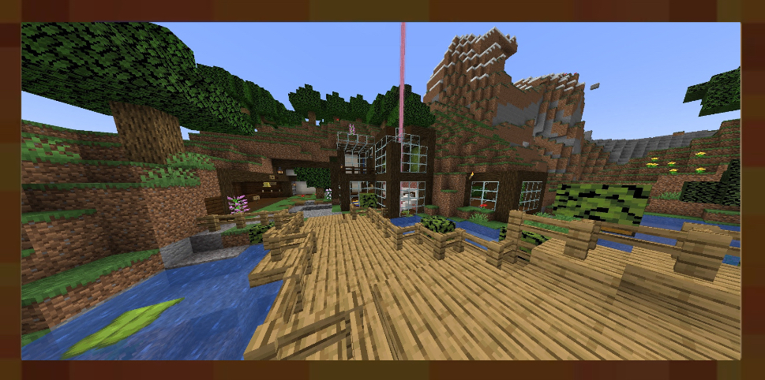
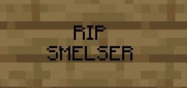
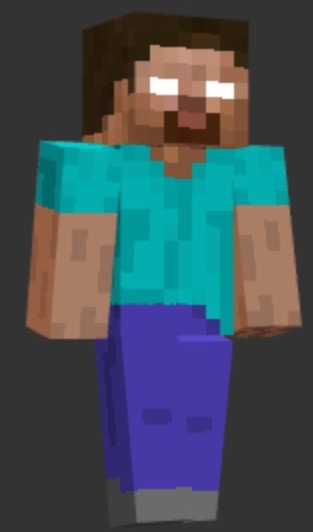

The Lore of Walmart2714
==------------------------------------------------------==
|| The Beginning ||
-------------------------------------------------------------
In the beginning, there were two determined advertures. Their names were Hyc and Twinklestoes.
They foraged this land and made it a home. They soon began scavenging for materials. And then there were more...

Then there were 3 brave adventures. Hyc, Twinklestoes and Smelser.
They continued to scavenge and explore the land.
Sadly the end came too soon for smelser, never to be seen again...

Then there were 4 adventures. hyc, Twinklestoes and smelser, and livrooney24.
They scavenged again. They focused on building. They added a Scheels Sporting Goods and expanded the rooms. But they did not know the trouble to come soon.
Then there were five, Hyc, Twinklestoes, smelser, livrooney24 and jessiej1.
Together, Hyc, Twinklestoes and jessiej1 fought hard against the evil force of Horebrine who terrorized this land. They expanded their home to new lengths.

They added new floors, and new farms, Their world has never been so successful as now. But Horebrine continued to lurk in the shadows, attacking when given the chance.
Then the brave adventures KILLED Horebrine but...
it didnt end there. Horebrine demanded they defeat the warden, or else he'd come back. They defeated the warden but not in time...
Horebrine still lurks, waiting to strike next, but something more sinister strikes the land...
-------
-------------------
LEATHER
-------------------
-------
There was leather everywhere to be seen, you could NOT escape it.
Everywhere u stepped, everywhere u breathed there was leather.
But it did not end there.....
The leather was just
beginning................
This is just the beginning for the world Walmart2714......